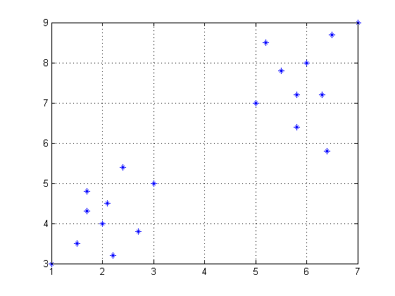
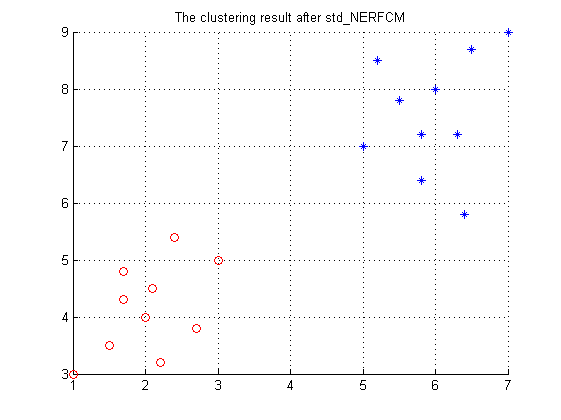

Contents
function std_RFCM_test
pre..
close all;
clear;
clc;
format compact;
人造数据
c = 2;
X=[1 1.5 1.7 1.7 2 2.1 2.2 2.4 2.7 3 5 5.2 5.5 5.8 5.8 6 6.3 6.4 6.5 7
3 3.5 4.8 4.3 4 4.5 3.2 5.4 3.8 5 7 8.5 7.8 7.2 6.4 8 7.2 5.8 8.7 9];
X = X';
figure;
title('人造数据');
plot(X(:,1),X(:,2),'*');
grid on;
D = pdist(X,'euclidean');
D = squareform(D);

std_NERFCM for synthesis data
[U,V,iteration,beta] = std_NERFCM(D,c)
figure;
hold on;
for i = 1:length(X)
if U(1,i) > U(2,i)
plot(X(i,1),X(i,2),'ro');
else
plot(X(i,1),X(i,2),'*');
end
end
grid on;
title('The clustering result after std\_NERFCM');
U =
Columns 1 through 13
0.7684 0.8265 0.8390 0.8661 0.8749 0.8743 0.8134 0.7686 0.8311 0.7642 0.2036 0.2073 0.1430
0.2316 0.1735 0.1610 0.1339 0.1251 0.1257 0.1866 0.2314 0.1689 0.2358 0.7964 0.7927 0.8570
Columns 14 through 20
0.1337 0.2075 0.1466 0.1534 0.2842 0.2065 0.2439
0.8663 0.7925 0.8534 0.8466 0.7158 0.7935 0.7561
V =
0.0757 0.0235
0.0814 0.0176
0.0826 0.0164
0.0853 0.0136
0.0861 0.0127
0.0861 0.0128
0.0801 0.0190
0.0757 0.0235
0.0818 0.0172
0.0753 0.0239
0.0200 0.0809
0.0204 0.0805
0.0141 0.0871
0.0132 0.0880
0.0204 0.0805
0.0144 0.0867
0.0151 0.0860
0.0280 0.0727
0.0203 0.0806
0.0240 0.0768
iteration =
18
beta =
0

data set with actual background
load wine;
D = pdist(wine,'euclidean');
D_wine = squareform(D);
c = 3;
[U_wine,V_wine,iteration_wine,beta_wine] = std_NERFCM(D_wine,c);
pre_labels = zeros(length(wine),1);
for i = 1:length(wine)
[C,index] = max(U_wine(:,i));
pre_labels(i) = index;
end
flag = zeros(1,3);
for i = 1:3
flag(i) = sum(pre_labels(1:59)==i);
end
[num1,index] = max(flag);
flag = zeros(1,3);
for i = 1:3
flag(i) = sum(pre_labels(60:130)==i);
end
[num2,index] = max(flag);
flag = zeros(1,3);
for i = 1:3
flag(i) = sum(pre_labels(131:end)==i);
end
[num3,index] = max(flag);
accuracy = (num1+num2+num3) / length(wine) * 100;
disp(sprintf('Accuracy = %g%%',accuracy))
Accuracy = 91.0112%